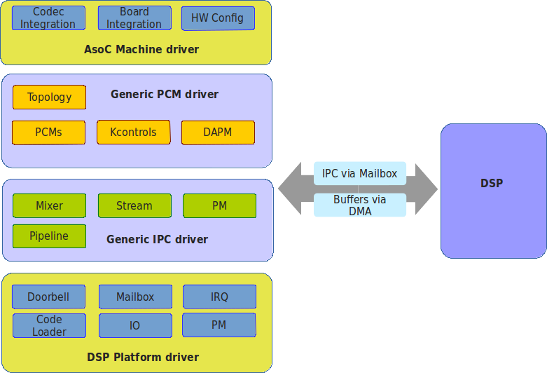

Host Architecture¶
SOF Driver Architecture¶
Sound Open Firmware can either operate as a standalone firmware or alongside a host OS driver for configuration and control. The Sound Open Firmware OS driver is responsible for loading firmware, loading configuration and managing firmware use cases. Currently Sound Open Firmware has a driver for the Linux OS.
The Sound Open Firmware driver code is dual licensed GPLv2 and BSD and this means the user can choose which licence they want to use (either BSD or GPLv2). The driver stack is designed with maximum resuse so that large portions of it can be taken and integrated into other OSs or RTOSs.
See also
Refer to the indepth SOF Driver Architecture document for more information.
Linux Driver¶
The Linux ASoC driver is upstream in the Linux kernel from v5.2 onwards. The architecture for Sound Open Firmware is shown in the diagram below. The driver architecture is split into four layers, like a protocol stack, each with a different purpose.
Machine driver. The ASoC machine driver does all the machine/board audio hardware integration. It also glues the platform driver and drivers for any codec(s) together so they appear as a single ALSA sound card. Sound Open Firmware can reuse existing upstream machine drivers (as only the platform name needs to be changed) or can have bespoke machine drivers. Linux OS specific - GPLv2 only.
Generic PCM Driver. The PCM driver creates ALSA PCMs, DAPM, and kcontrols based on the topology data loaded at run time. The PCM driver also allocates buffers for DMA and registers with run time PM. It is architecture and platform generic code. Generic for all platforms, but OS specific - GPLv2 only.*
Generic IPC driver. The IPC driver is the messaging bridge between the host and DSP and defines the messaging ABI and protocol. It is architecture and platform generic code. Generic OS - BSD or GPLv2.
DSP Platform Driver. The platform driver is a platform specific driver that abstracts the low level platform DSP hardware into a common generic API that is used by the upper layers. This includes code that will initialize the DSP and boot the firmware. Generic OS - BSD or GPLv2.
Figure 3 Sound Open Firmware Linux Driver Architecture. The right-hand side of the diagram shows the mailbox/doorbell mechanism and the DSP. The Linux PCM and IPC drivers can be reused without modification on every platform. Runtime differentiation can be achived by regenerating topology data to match device use cases whilst static hardware differentiation is achieved via the machine driver and/or ACPI / Device Tree configuration.¶
{kind=link}